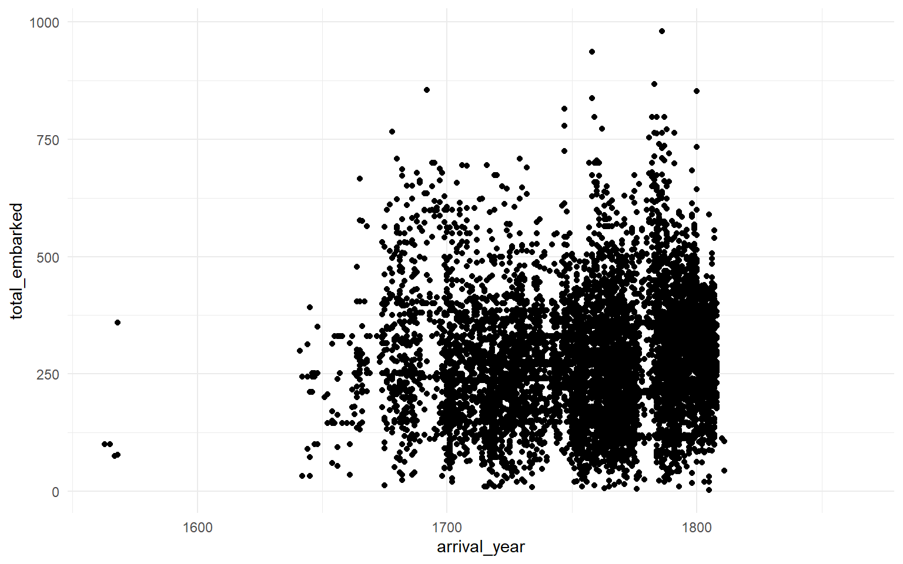
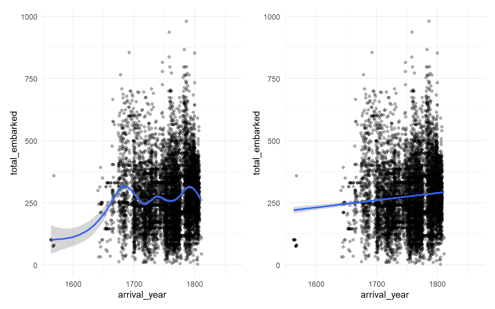
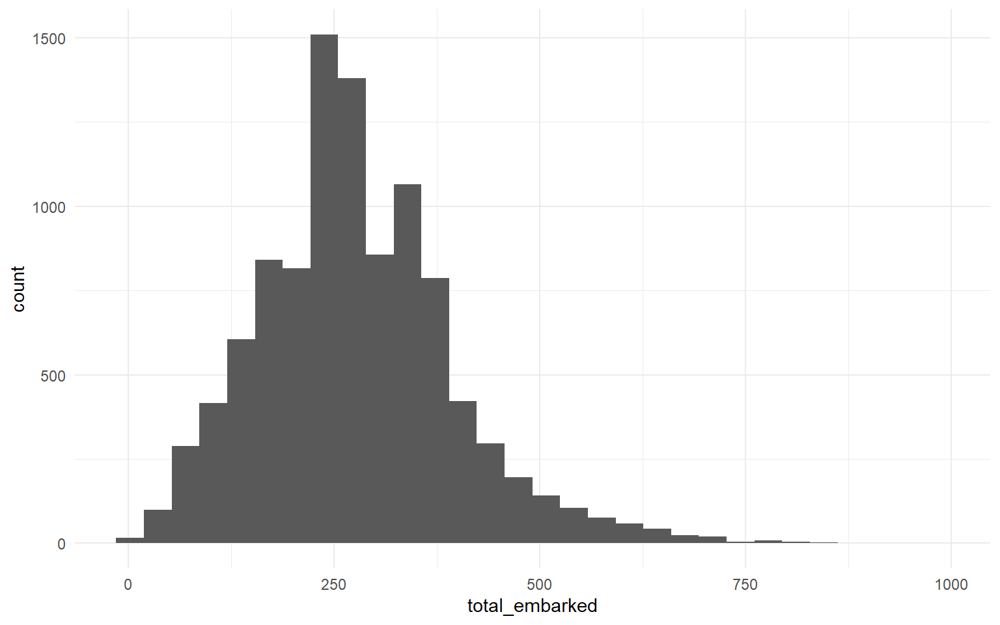
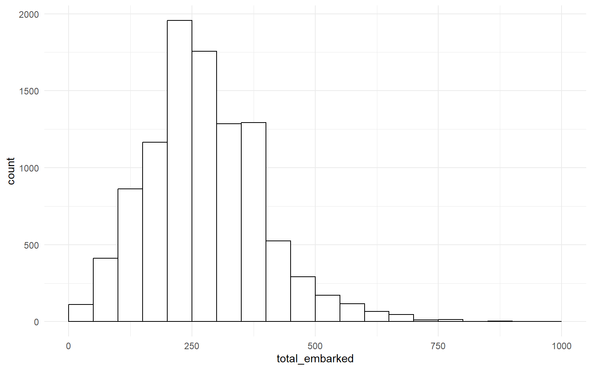
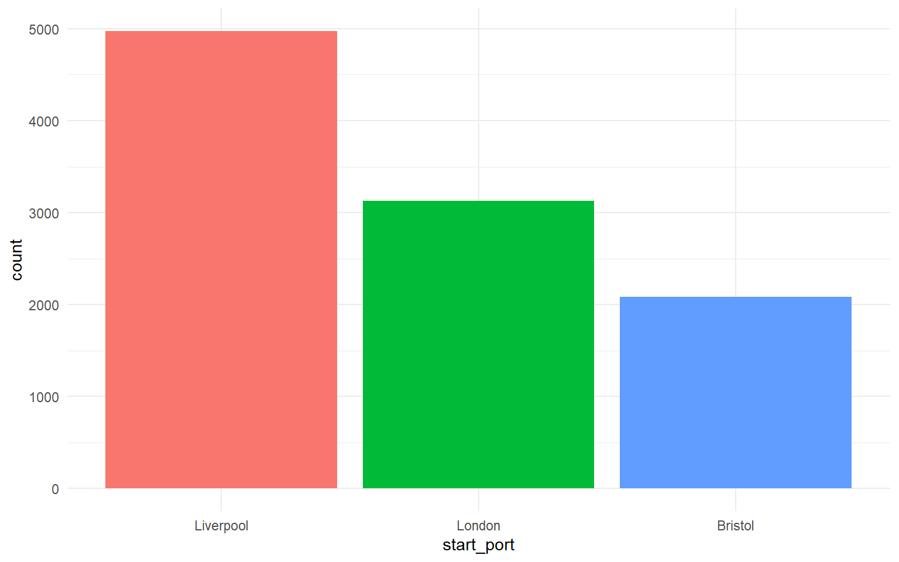
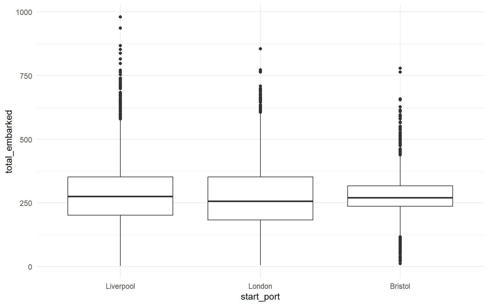
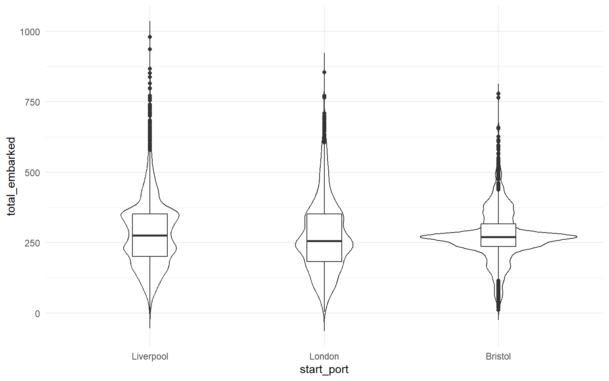

2 Basic plots
2.1 Intended learning outcomes
By the end of this chapter you will be able to:
- Explain what is meant by a “grammar of graphics” and a “layer” in
ggplot2 - Build a scatterplot using
geom_point() - Add a line of best fit using
geom_smooth() - Plot the distribution of a single continuous variable with
geom_histogram() - Plot counts with
geom_bar()and pre-computed values withgeom_col() - Plot grouped distributions with
geom_boxplot()andgeom_violin()
2.2 Functions used
- ggplot2:
ggplot(),aes(),geom_point(),geom_smooth(),geom_histogram(),geom_bar(),geom_col(),geom_boxplot(),geom_violin() - dplyr:
filter(),group_by(),count(),arrange(),summarise()
2.3 The grammar of graphics
ggplot2 is so powerful because it builds plots in layers. The first layer is always the base of the plot, set up with ggplot(), which specifies the data and the aesthetic mappings (which variables go on which axis, or are mapped to colour or shape). Subsequent layers add geoms (geometric objects such as points, bars, or boxes), scales, themes and so on. Layers are added with +.
It is helpful to think of any plot as having several elements that sit semi-transparently on top of each other. A scatterplot with a line of best fit, for example, is the base layer, then the points layer, then the smoother layer.
2.4 Scatterplots
A scatterplot is appropriate when both axes are continuous. The base layer below maps arrival_year to the x-axis and total_embarked to the y-axis.
Run that line on its own. You get an empty plot with the axes drawn but no data. That is because we have not added a geom. Given the variable types, what type of plot is likely to be built on this base layer?
We add the points with geom_point().

You will see a warning saying Removed 422 rows containing missing values or values outside the scale range. That means 422 voyages in the data have a missing value for either arrival_year or total_embarked. ggplot2 quietly drops them. We will look at handling missing data directly in sec-wide-to-long.
There are so many points that it is hard to see the trend. That is not a fault of the plot; it is a reflection of the scale of the trade.
2.5 Adding a line of best fit
A smoother makes it easier to see the trend. geom_smooth() uses LOESS by default for samples smaller than 1000 observations and GAM otherwise. For a linear trend, set method = "lm".

The combination of loess_plot + linear_plot is from the patchwork package, which we cover properly in sec-patchwork.
2.6 Layer order matters
If you add geom_smooth() first and geom_point() second, the points are drawn on top of the smoother.
2.7 Histograms
A histogram shows the distribution of a single continuous variable. The x-axis is divided into bins and the y-axis shows how many observations fall into each bin.

The default uses 30 bins and you will see the message stat_bin() using bins = 30. Pick better value with binwidth. It is good practice to set binwidth (the size of each bin) explicitly, along with boundary = 0 so the bins start at sensible round numbers.

fill sets the inside colour of each bar; colour sets the outline.
2.8 Bar charts of counts
geom_bar() counts the number of observations in each level of its x-aesthetic. You do not specify a y-axis because the y-axis is always a count.
If we try to plot start_port directly, the result is unusable.
There are too many ports to fit on one axis. We can confirm this with a quick count.
| start_port | n |
|---|---|
| Liverpool | 4973 |
| London | 3126 |
| Bristol | 2083 |
| Lancaster | 125 |
| Whitehaven | 64 |
| Plymouth | 32 |
| Great Britain, port unspecified | 15 |
| Greenock | 11 |
| Poole | 9 |
| Chester | 7 |
| Guernsey | 7 |
| Dartmouth | 5 |
| England, port unspecified | 5 |
| Glasgow | 5 |
| Montrose | 4 |
| Portsmouth | 4 |
| Poulton | 4 |
| Cowes | 3 |
| Exeter | 3 |
| Lyme | 3 |
| River Thames | 3 |
| Dover | 2 |
| Hull | 2 |
| Leith | 2 |
| Colchester | 1 |
| Falmouth (Eng.) | 1 |
| Kendal | 1 |
| Newcastle upon Tyne | 1 |
| Preston | 1 |
| Scotland, port unspecified | 1 |
| Shoreham | 1 |
| Stockton | 1 |
| Topsham | 1 |
| Wales | 1 |
Liverpool, London and Bristol dominate. We will filter to those three for the next several plots.
The %in% operator reads as “is one of”. dat_filter keeps only the rows where start_port matches one of the three values.

This bar chart shows the number of voyages, not the number of people. Each Liverpool voyage trafficked, on average, hundreds of people, so the human cost is far larger than the bar heights suggest. We will plot the human totals shortly.
2.9 Bar charts of pre-computed values (geom_col())
When you already have the y-values (because you computed them yourself), use geom_col() instead of geom_bar(). The default statistic for geom_col() is "identity": it uses the numbers you supplied as-is.
| start_port | embarked |
|---|---|
| Liverpool | 1337530 |
| London | 832944 |
| Bristol | 563796 |
na.rm = TRUEtellssum()to ignore missing values when computing the total. Without it, any single missing value would produceNAfor the whole group..groups = "drop"removes the grouping after summarising, which is the moderndplyrrecommendation; without it you get a “regrouping” message.How many enslaved people embarked on ships originating in Liverpool?
2.10 Boxplots
A boxplot shows the median, interquartile range and outliers of a continuous variable, optionally broken down by a categorical variable on the x-axis.

The median number of people embarked per voyage was just over 250, but in many cases the number was much higher, particularly for ships originating in Liverpool.
2.11 Violin-boxplots
A violin plot shows the full distribution as a mirrored density. Combined with a thin boxplot inside it, the result is much more informative than a boxplot alone.

The order of the layers matters. If you draw the boxplot first and the violin on top, the boxplot is hidden. Try changing trim = FALSE to TRUE and width = 0.2 to 0.5 to see what each argument does.
2.12 Activities
Modify the histogram so the binwidth is 25 instead of 50. Does the peak shift?
Build a boxplot of mortality by start_port (still using dat_filter).